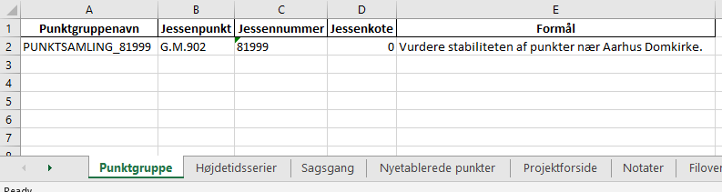
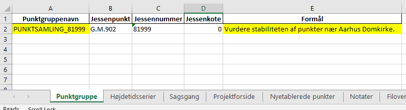
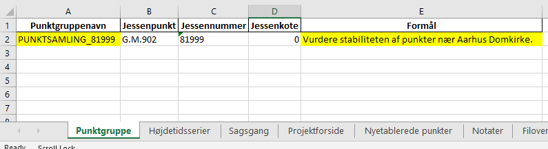

Arbejde med højdetidsserier og punktsamlinger i FIRE
En højdetidsserie er en samling af koter, som alle er målt til det samme punkt til forskellige tidspunkter, og som er givet i det samme højdesystem. Når hver kote i tidsserien er beregnet ved fastholdelse af det samme punkt og kote kaldes koterne i tidsserien for jessenkoter og tidsseriens højdesystem siges at være et lokalt højdesystem. Det fastholdte punkt kaldes for jessenpunktet og jessenpunktets fastholdte kote kaldes referencekoten.
En samling af højdetidsserier, som alle har samme jessenpunkt og referencekote, kaldes en punktsamling eller punktgruppe.
Note
Vær opmærksom at højdetidsseriernes jessenkoter ofte bare kaldes koter. Tilsvarende kaldes referencekoten ofte bare for jessenkoten!
Arbejdet med højdetidsserier kan inddeles i kategorierne vedligehold og analyse. Vedligehold af tidsserier indebærer primært opmåling af punktgrupper og efterfølgende beregning af nye koter til tidsserierne. Når nye punkter etableres, fx fordi et andet punkt i punktgruppen er gået tabt eller en ny sikringsgruppe skal anlægges, vil der også ligge noget vedligehold i at indmåle punkterne og efterfølgende oprette nye tidsserier i databasen.
Højdetidsserieanalyse bruges som værktøj til at støtte op om beslutninger angående den geodætiske infrastruktur. Analyserne foretages på baggrund af det data som ligger i FIRE og gør det muligt at identificere lokale bevægelser af punkterne i punktgruppen. Dette bruges igen til fx at dokumentere stabiliteten af vores CORS-stationer, eller træffe beslutning om hvorvidt et 5D-punkt skal indgå i en geoidetilpasning.
Man bruger programmet fire ts analyse-hts til at analysere Højdetidsserier. Programmet fungerer i høj grad på samme måde som programmet til GNSS-tidsserier. For detaljer om beregningen af lineære fit og statistiske parametre henvises derfor til beskrivelsen af fire ts analyse-gnss.
De følgende afsnit gennemgår nogle typiske vedligeholdelsesopgaver som FIRE nu understøtter, herunder:
at oprette og lukke punktgrupper
tilføje nye punkter til punktgrupper
beregne og indsætte nye koter til tidsserier
Note
Der er ikke ændret noget ved det almindelige nivellement-workflow. Det er altså ikke nødvendigt at læse videre hvis man ikke har brug for at arbejde med tidsserier!
Vedligehold af punktsamlinger og tidsserier
Vedligehold og opdatering af punktgrupper og højdetidsserier er indbygget i fire niv-modulet. Før man begiver sig ud i at vedligeholde tidsserier i FIRE, anbefales det derfor at man er bekendt med den almindelige funktionalitet som niv-modulet tilbyder. Det vil bl.a. sige at man bør være komfortabel med at arbejde med nivellement-sager i niv-modulets sagsregneark.
Funktionaliteten i sagsregnearket er blevet udvidet med fanerne Punktgruppe og
Højdetidsserier. Disse faner oprettes først ved kald af én af kommandoerne fire niv
opret-punktsamling eller fire niv udtræk-punktsamling.
En oversigt og forklaring af de to faners indhold ses nedenfor. Bemærk at indholdet i tabellerne blot er test-eksempler.

PUNKTSAMLING_<jessennr>
<ident>_HTS_<jessennr>Opret ny punktsamling
Opret ny sag og tilhørende sagsark:
fire niv opret-sag MIN_SAG
Opret punktsamling i sagsarket og rediger oplysningerne
fire niv opret-punktsamling MIN_SAG --jessenpunkt 81999
Note
Hvis jessenpunktet ikke har et jessennummer skal det oprettes først. Se Opret nyt jessennummer.
Der oprettes herefter to nye faner i sagsarket: Punktgruppe og Højdetidsserier. Oplysningerne i de to faner redigeres indtil man er klar til at lægge dem i databasen.
Rediger punktgruppe-fanen
Det er muligt at redigere i punktgruppenavnet og formål. Det anbefales dog at beholde default-navnet
PUNKTSAMLING_81xxx 

Rediger højdetidsserier-fanen
Den første tidsserie tilhører jessenpunktet og oprettes i arket automatisk. Per definition er den konstant (den indeholder kun referencekoten), og er som sådan ret intetsigende. Dog er den af tekniske årsager nødvendig.

Tilføj de ønskede punkter. Husk at angive punktgruppen i første kolonne.
Giv tidsserierne et sigende navn. Det anbefales kraftigt at bruge default-formen
<ident>_HTS_<jessennummer>

Tip
--punkter:fire niv opret-punktsamling MIN_SAG --jessenpunkt 81999 --punkter SKEJ,RDIO,RDO1

fire niv udtræk-punksamling MIN_SAG --jessenpunkt 81999 --punkter SKEJ,RDIO,RDO1
Til sidst lægges punktsamling og højdetidsserier i databasen:
fire niv ilæg-punktsamling MIN_SAG fire niv ilæg-tidsserie MIN_SAG
Opret nyt jessennummer
Før et punkt kan blive brugt som jessenpunkt, skal punktet have et jessennummer. Dette
gøres ved at indsætte attributten NET:jessen og angive det nye jessennummer med
IDENT:jessen via de gængse kommandoer fire niv udtræk-revision og fire niv ilæg-revision.
Note
Bemærk at jessennummeret skal være unikt (der må ikke være andre punkter med samme jessennummer). Som det er nu skal man selv indtaste det nye jessennummer. En oversigt over alle punktsamlinger og de tilhørende jessennumre som allerede er i brug kan fås med fire info punktsamling.
Opret ny tidsserie i en punktsamling
For at oprette en ny tidsserie i en punktsamling gøres følgende:
fire niv udtræk-punktsamling MIN_SAG --punktsamlingsnavn PUNKTSAMLING_81999 --punkter G.I.1703
hvor --punkter angiver en kommasepareret liste, af de punkter som skal have en ny
tidsserie.
Note
Hvis man i sagsarket allerede har indlæst punkter med læs-observationer eller
udtræk-observationer, således at fanen Punktoversigt er til stede, så kan man
med parameteren --punktoversigt fortælle programmet, at det skal oprette nye
tidsserier for alle punkterne i punktoversigten. Fx:
fire niv udtræk-punktsamling MIN_SAG --punktsamlingsnavn PUNKTSAMLING_81999 --punktoversigt

Herefter kan formål for tidsserien rettes i fanen Højdetidsserier. Som det også er beskrevet under
Opret ny punktsamling, så anbefales det at man så vidt muligt bruger tidsseriens
default-navn: <ident>_HTS_<jessennummer>

Når man er tilfreds, lægges rettelserne i databasen:
fire niv ilæg-punktsamling MIN_SAG
fire niv ilæg-tidsserie MIN_SAG
Rediger eksisterende punktsamlinger og tidsserier
Der er begrænset mulighed for at redigere metadata for punktsamlinger og tidsserier, idet kun formålet kan redigeres. Idet det antages at der er oprettet en sag i forvejen, gøres følgende:
fire niv udtræk-punktsamling MIN_SAG PUNKTSAMLING_81999
Rediger formål for punktsamlinger og tidsserier i sagsarket. Derefter ilægges ændringerne:
fire niv ilæg-punktsamling MIN_SAG
fire niv ilæg-tidsserie MIN_SAG
Opdatering af højdetidsserier
Opdatering af tidsseriekoter følger overordnet samme fremgangsmåde som ved opdatering af almindelige DVR90-koter, med få undtagelser.
Det følgende springer let over de dele af beregningsflowet som der ikke er ændringer til, og med nedslag de steder hvor der er undtagelser.
fire niv opret-sag MIN_SAG
fire niv læs-observationer MIN_SAG --kotesystem Jessen
Normalt opbygges Punktoversigten med læs-observationer ved anvendelse af hvert
observeret Punkts seneste DVR90-kote. Ved anvendelse af det nye flag --kotesystem
Jessen fortæller man nu programmet, at Punktoversigten skal opbygges ved hjælp af hvert
Punkts seneste jessenkote i stedet. Denne kote bliver brugt til at vise koteændringer og
opløft, når man har lavet en beregning.
Note
Her skal man lige være opmærksom. Det er nemlig muligt for et punkt at indgå i flere
Punktsamlinger (med forskellige jessenpunkter) og dermed have flere Højdetidsserier. Den viste kote er den nyeste
jessenkote iblandt alle punktets Højdetidsserier. Dette kan lede til at koteændring og
opløft senere kan komme til at se lidt underlige ud. Der er senere, i regn, mulighed for at få
plottet tidsserierne med de nyberegnede koter vist i forlængelse.
Det kan desuden ske, at man har opmålt nogle punkter, som slet ikke har en Højdetidsserie. I dette tilfælde vil de se ud på samme måde som nyetablerede punkter, altså med kote og spredning u-udfyldt.
Herefter skal man vælge et fastholdt punkt og dertil en fastholdt kote. Dette skal være et registreret jessenpunkt og referencekote. Dette gøres ved først at udtrække punktsamlingen, som er blevet opmålt:
fire niv udtræk-punktsamling MIN_SAG --punktsamlingsnavn "PUNKTSAMLING_81xxx"
Resultaterne af udtrækningen skrives til sagsarket i to nye faner Punktgruppe og Højdetidsserier.
Note
I udtræk-punktsamling kan du i stedet for --punktsamlingsnavn "PUNKTSAMLING_81xxx",
vælge at bruge --jessenpunkt 81xxx
Dette udtrækker alle Punktsamlinger der har punktet 81xxx som jessenpunkt. Man behøver desuden ikke at bruge jessenpunktets jessennummer. Alle jessenpunktets gyldige IDENT'er kan bruges, herunder lands- og GI-nummer.
Herefter sættes, som ved en normal beregning, et "x" ved jessenpunktet som skal fastholdes, og ved jessenpunktets kote skriver man den jessenkote som står i Punkgruppe-fanen.

Når man har valgt et fastholdt jessenpunkt og referencekote, kører man beregningerne som man plejer:
# kontrol
fire niv regn
# endelig
fire niv regn
Hvis man vil, er der tilføjet parameteren --plot til regn kommandoen. Denne
giver mulighed for at se et plot af de tidsserier man har udtrukket, med de nyberegnede
koter vist i forlængelse. Det skal understreges, at kun de tidsserier som fremgår af fanen
Højdetidsserier vil blive plottet. Punkter i beregningen, som ikke har en
højdetidsserie, og som derfor ikke fremgår af fanen Højdetidsserier, vil altså ikke
blive plottet.
Beregningen afsluttes også som man plejer:
fire niv ilæg-observationer
fire niv ilæg-nye-koter
Der er ikke nye inputs til disse to kommandoer.
Vigtigt: ilæg-nye-koter kigger nu på kolonnen System i fanen Endelig beregning. Hvis der her står "Jessen", så
prøver programmet at finde en Højdetidsserie ovre i Højdetidsserier-fanen, som koten skal knyttes
til. Hvis der ikke kan findes en højdetidsserie for et punkt, vil programmet brokke sig. Man kan
derefter gøre én af to ting:
Oprette tidsserier for de punkter som ikke har én, i den korrekte punktsamling. (Se beskrivelse i Opret ny tidsserie i en punktsamling. Brug i
udtræk-punktsamlingmed fordel parameteren--punktoversigt.)Udelade publikation. Sæt "x" i kolonnen ud for de pågældende punkter
Skift af jessenpunkt
Sommetider er det nødvendigt at udskifte jessenpunktet for en punktsamling. Det kan fx være fordi jessenpunktet konstateres ustabilt eller at jessenpunktet er gået tabt.
Der findes to måder at dette kan udføres på: en quick'n'dirty (transformation) og en stringent (genberegning).
Quick'N'Dirty
Den hurtige og beskidte metode er til hurtige ad hoc beregninger eller analyser, hvor man "transformerer" tidsseriekoterne fra det gamle, lokale højdesystem til det nye, lokale højdesystem.
Dette er fx praktisk i tilfældet hvor to tidsserier har forskellige bevægelser ift. jessenpunktet. Her kan det være svært rent grafisk at anskue de to punkters bevægelse ift. hinanden, hvorfor det kan hjælpe at ophøje det ene punkt til jessenpunkt, hvis bevægelse i sit eget system pr. definition er 0.
Der tages udgangspunkt i den "gamle" tidsserie for det punkt som skal være det nye jessenpunkt. Denne tidsserie trækkes simpelthen bare fra de andre tidsserier i punktsamlingen. Dette kræver at tidsserierne er beregnet til de samme tidspunkter som det nye jessenpunkt.
Denne operation er faktisk ikke så dirty, idet det faktisk giver de samme koter som hvis man lavede en genberegning med et nyt fastholdt jessenpunkt. Dog vil de estimerede spredninger ikke blive transformeret, hvorfor denne metode ikke bør (eller kan) anvendes til tidsserier som skal lægges i databasen.
Note
Dette er pt. ikke implementeret i FIRE. Vil man anvende denne metode kan det relativt
let gøres ved at udtrække de tidsserier man er interesseret i med fire ts hts, og
derefter selv trække tidsserierne fra hinanden, eksempelvis i excel.
Tip
Vil man være endnu mere dirty, så kan man interpolere imellem tidspunkterne i det nye jessenpunkts tidsserie for at kunne transformere data til de tidspunkter hvor tidsserien for det nye jessenpunkt ikke er blevet beregnet.
Den stringente
I FIREs datamodel, er jessenpunktet definerende for en punktsamling, og derfor kan man principielt ikke skifte jessenpunktet. Dog er det muligt at oprette en ny punktsamling med det nye jessenpunkt, og som indeholder de samme punkter som den gamle punktsamling.
Derefter er det nødvendigt at genberegne tidsserierne, skridt for skridt, og ved hvert skridt anvende det samme sæt af observationer som blev brugt til de gamle tidsserier, og selvfølgelig med fastholdelse af det nye jessenpunkt.
For at kunne genskabe alle tidsskridt i de gamle tidsserier kræves at det nye jessenpunkt har været opmålt i de samme kampagner som det gamle jessenpunkt.
Fremgangsmåde:
Giv nyt jessenpunkt et jessennummer med
fire niv udtræk-revisionogfire niv ilæg-revisionOpret ny punktsamling med det nye jessenpunkt
Tilføj punkter og tidsserier til punktsamlingen
- For hver tidspunkt i de gamle tidsserier:
Udtræk relevante observationer
Følg det gængse niv-workflow for beregning og ilægning af tidsseriekoter, som beskrevet i Opdatering af højdetidsserier
Tip
Step 2-3 gøres nemmest ved at udtrække den gamle punktsamling med fire niv
udtræk-punktsamling og derefter redigere jessenpunkt, punktsamlingsnavn og formål og ilægge
med fire niv ilæg-punktsamling